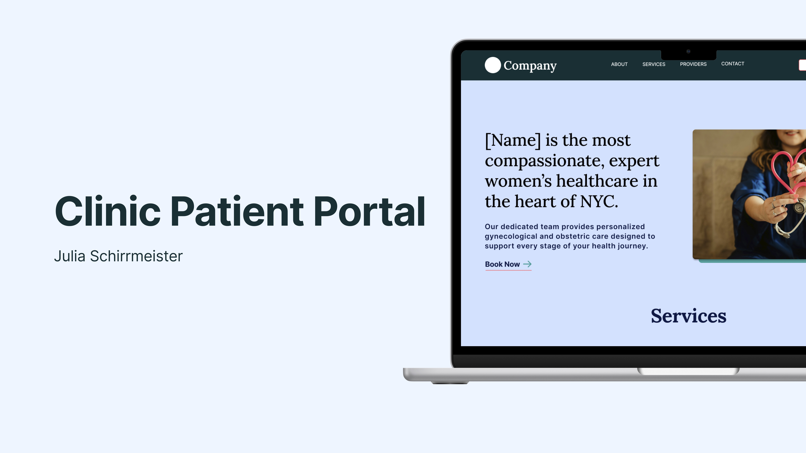
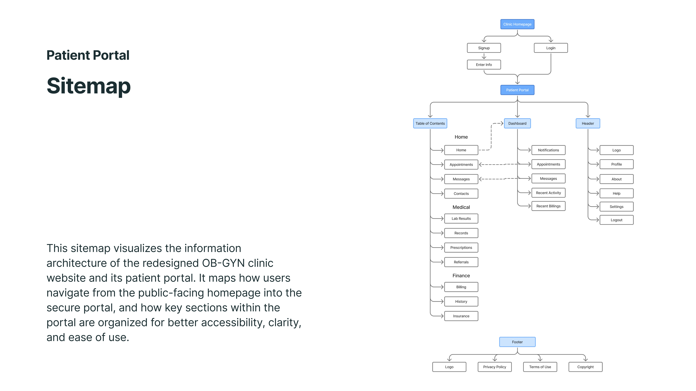
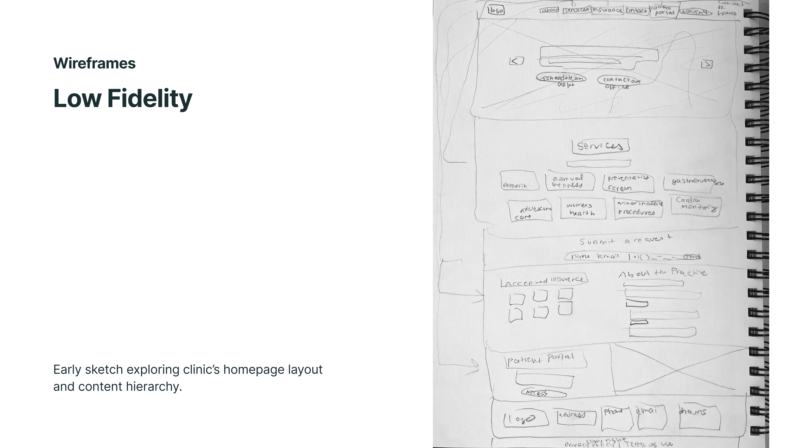
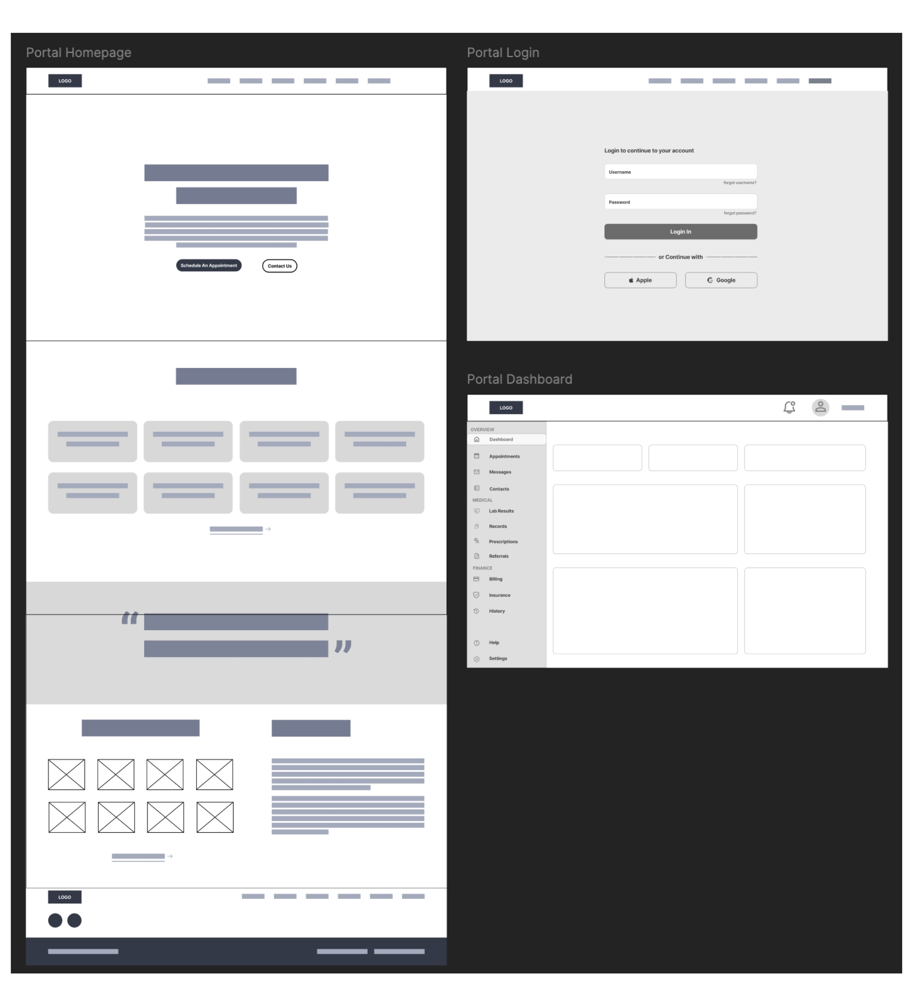
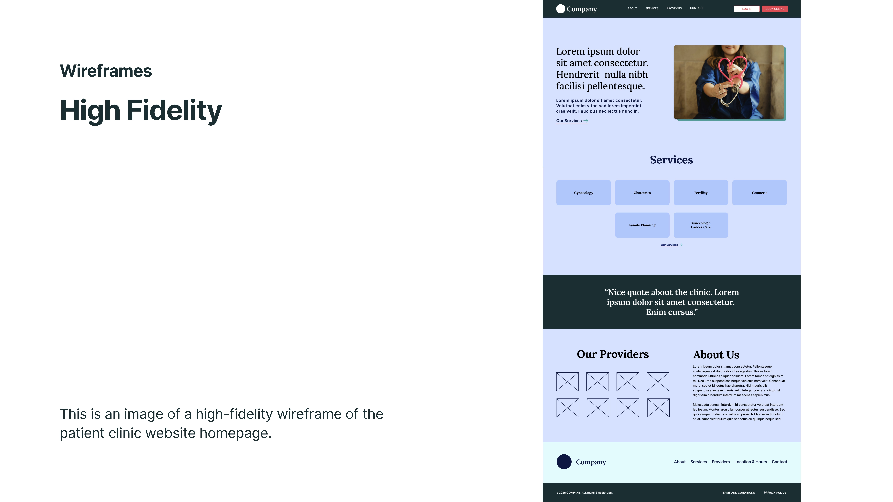
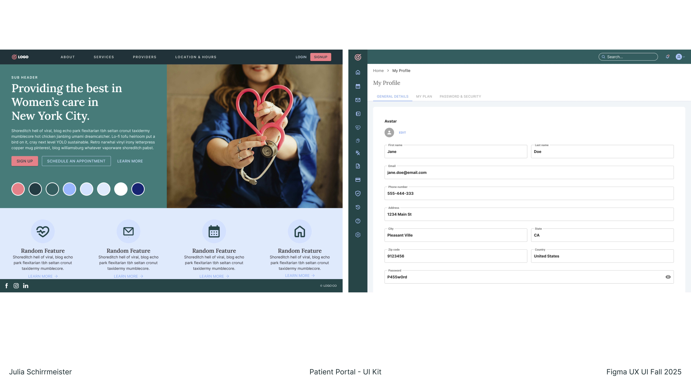
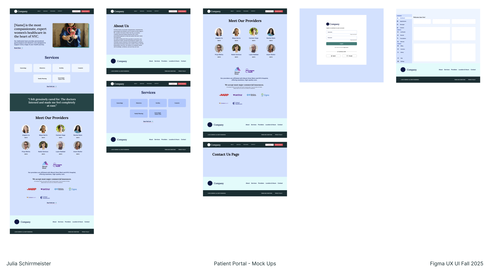

Patient Portal
A UX redesign of an OB-GYN clinic's website and patient portal — inspired by personal experience as a patient, and driven by a commitment to healthcare accessibility and inclusive design. The project spans information architecture, wireframing at three fidelity levels, a complete UI kit, and an interactive prototype.

Project Overview & Concept
This project is a UX redesign of an OB-GYN clinic's website and patient portal. The redesign is inspired by personal experience as a patient at this clinic — noticing how difficult the existing portal was to use, and exploring how thoughtful UX design could meaningfully improve a real-world healthcare experience.
Why this project? The healthcare industry is a major sector in New York City and continues to grow regardless of economic shifts. Designing for healthcare combines complex systems with meaningful impact on people's lives — and this project allowed me to apply that thinking to a space I care about deeply. Accessibility in digital products is something I'm personally passionate about and often see overlooked in design. This redesign applies accessibility best practices to make the portal genuinely inclusive for all patients.
"Design for the hardest user, and everyone else benefits too."
The project moves through the full UX process: a rebuilt information architecture, wireframes at three fidelity levels, a complete UI kit built in Figma, high-fidelity mockups, and an interactive prototype tested across the three highest-traffic areas of the portal.
Site Map & Information Architecture
This sitemap visualizes the information architecture of the redesigned OB-GYN clinic website and its patient portal. It maps how users navigate from the public-facing homepage into the secure portal, and how key sections within the portal are organized for better accessibility, clarity, and ease of use.

Wireframes
Early sketch exploring the clinic's homepage layout and content hierarchy.
Wireframe of the clinic website homepage, sign-up page, and patient portal dashboard.
Wireframe of the patient clinic website homepage.



UI Kit & Design System
A design system was built in Figma using component architecture, design tokens, and documented usage guidelines. All components meet WCAG 2.1 AA standards for color contrast, touch target size, and focus states.

The primary color palette uses a calm, accessible blue-teal with clear semantic colors for status states (success, warning, error, info). The type system uses Inter at defined scale steps, with generous line-height for medical content readability.
Prototyping & Mockups
High-fidelity interactive prototypes were built in Figma covering the three primary user flows: viewing test results, scheduling an appointment, and sending a message to a care provider. Prototype tested with 8 participants in moderated sessions.

Final Outcome & Reflection
The redesigned portal reduced task completion time by an average of 34% in usability testing and received markedly higher satisfaction scores on clarity and ease of use. Users with accessibility needs — including older adults and those using screen readers — found the new system substantially easier to navigate.
What I learned: Healthcare UX demands an unusually high threshold of clarity. Designing for anxiety, distraction, and low health literacy pushed me to be more deliberate about every word, every visual decision. The most important insight was that simplicity is not the absence of information — it's the presence of the right information, clearly organized.